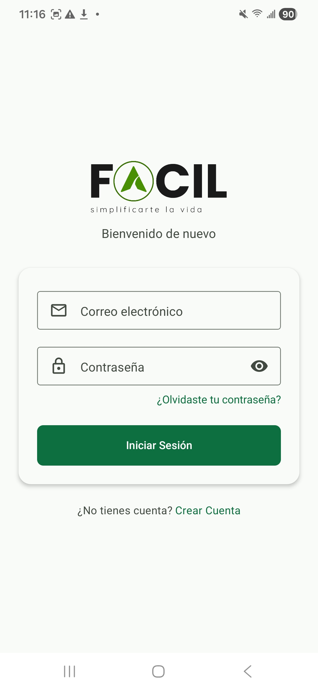
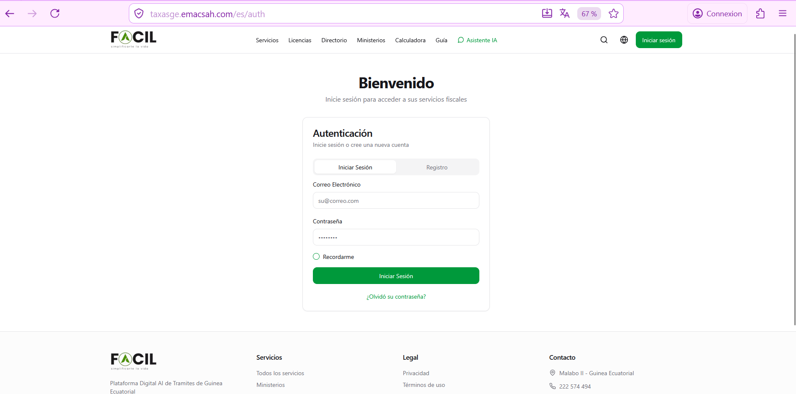
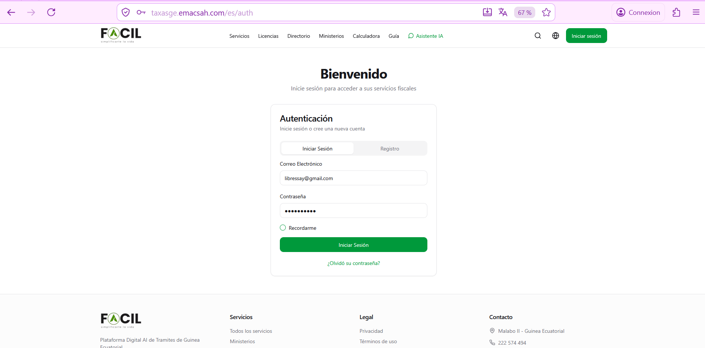

Iniciar sesión en Facil
Acceda a su cuenta personal con su email y contraseña. Si tiene la autenticación 2FA activada, deberá introducir además un código TOTP. La aplicación móvil ofrece adicionalmente acceso por biometría (huella o reconocimiento facial).
1. Acceder a la pantalla de inicio de sesión
Desde la pantalla de bienvenida, pulse el botón «Iniciar sesión» (azul, en la parte inferior). En la versión Web, también puede usar la URL directa https://facil.gov.gq/login.


su@correo.com, header público accesible (Servicios, Licencias, Calculadora...).2. Introducir email y contraseña
- Escriba el email con el que se registró (no use un alias o apodo).
- Introduzca la contraseña. El icono de ojo le permite verificar lo que escribe (útil si tiene dudas).
- Pulse «Iniciar sesión».

3. Código 2FA (si está activado)
Si ha activado la autenticación de dos factores, una segunda pantalla aparece después de la contraseña. Tiene 30 segundos para introducir el código TOTP de 6 cifras de su aplicación de autenticación (Google Authenticator, Authy, Microsoft Authenticator).
Si pierde acceso a su aplicación 2FA (teléfono perdido o destruido), use uno de los 10 códigos de respaldo que le entregamos al activar el 2FA. Si los ha perdido también, contacte al soporte presentando una prueba de identidad.
4. Acceso biométrico (solo móvil)
Después de iniciar sesión por primera vez en la aplicación móvil, Facil le propone activar el desbloqueo biométrico (huella digital o reconocimiento facial según su teléfono).
Una vez activado, las próximas conexiones se hacen con un simple gesto biométrico — sin necesidad de reescribir su email, contraseña o código 2FA. La biometría es local a su teléfono (los datos no salen del aparato), conforme a las normas de seguridad iOS Secure Enclave / Android StrongBox.
5. Recordar la sesión
La opción «Recordarme» (visible bajo el campo contraseña) le mantiene conectado durante 30 días en este dispositivo, incluso después de cerrar el navegador o la aplicación. Útil en su teléfono personal — desaconsejado en un ordenador público o compartido.
Si no la marca, su sesión expira al cerrar el navegador (web) o al pasar 30 minutos de inactividad (móvil), por seguridad.
6. Problemas frecuentes
| Síntoma | Solución |
|---|---|
| «Email o contraseña incorrectos» | Verifique mayúsculas/minúsculas. Si la duda persiste, use Recuperar contraseña. |
| «Cuenta bloqueada» | Espere 15 minutos (5 intentos fallidos) o 1 hora (10 intentos en 24h). |
| «Código 2FA inválido» | Sincronice el reloj de su teléfono (los códigos TOTP dependen de la hora). Use un código de respaldo si su teléfono está desincronizado. |
| No recibe email de alerta | Verifique el spam. La dirección email registrada puede ser obsoleta — contacte al soporte. |